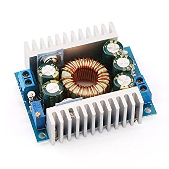

Battery

One of our goals was to have a completely untethered robot. This meant that it had to supply its own power. We were able to accomplish this with a 12V LiPo battery strapped to the belly of the robot. An Arduino Mega runs off of 7 - 12V, while the servos run off 5 - 6.8V. We could safely connect the Arduino to the battery, but 12V directly from the battery would have fried the servos, so we also integrated a power converter between them and the battery. The transformer has variable output voltage, which allowed us to experiment with optimizing the servos’ torque output without putting them in danger of over current.
A switch between the converter and the servos allows for the user to easily pause the robot’s movement.
One more problem we had to solve was that when the battery was disconnected but the Arduino was powered, back-current caused the Arduino to power the servos. To fix this, there is a diode between the converter and the Arduino.